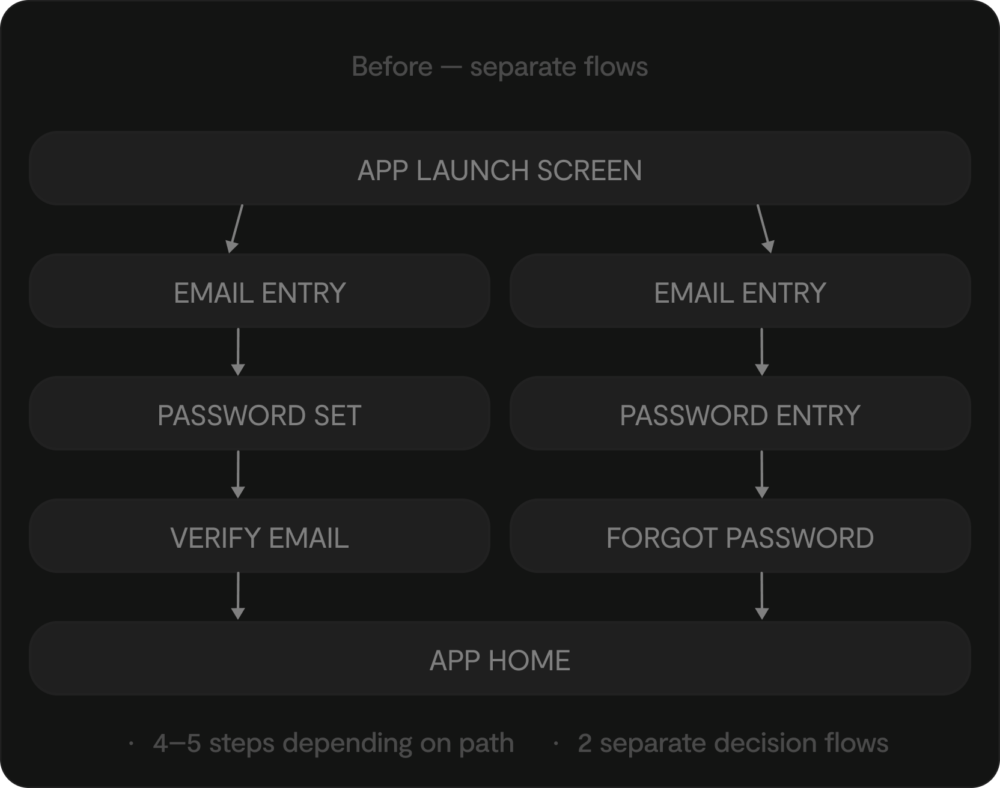
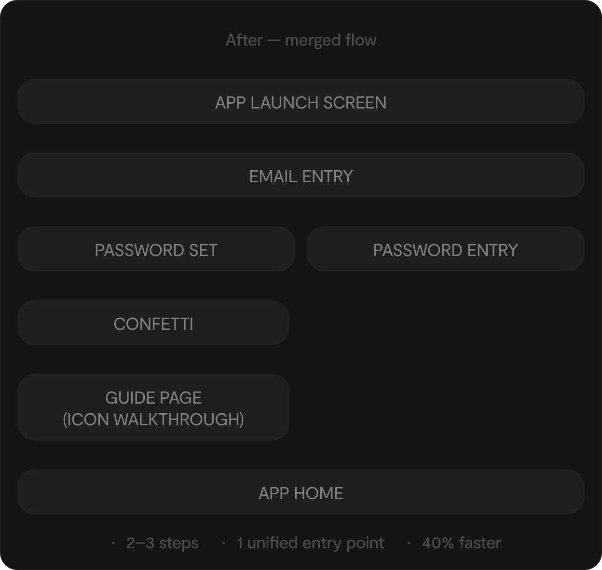
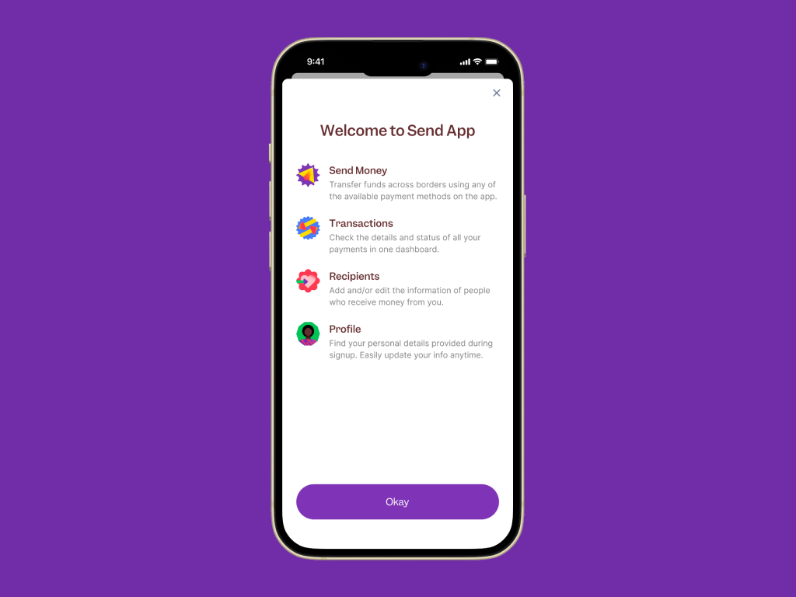

Send App: making a rebrand feel like more than a new coat of paint
Redesigning the onboarding experience to match a new brand identity while simplifying the authentication flow and cutting onboarding time by 40%.
Send App was undergoing a full rebrand — new visual identity, a younger and more energetic tone of voice, and a renewed focus on its core demographic of young Africans sending and receiving money. A rebrand of that scale doesn't just change how a product looks. It changes the promise it makes to new users from the very first screen.
Onboarding is where that promise either lands or doesn't. The existing flow was functional but dated — separate sign up and login paths, no delight moments, no guidance for new users navigating a recently redesigned interface with unlabelled icons. As the lead product designer, my job was to close that gap by rebuilding the entry experience from scratch so the first screens felt like the new Send App, not a reskinned version of what came before. I collaborated closely with the brand team on the new visual direction and with engineering on the feasibility of merging the sign up and login flow into one, and the confetti implementation.
The pre-rebrand onboarding — separate sign up and login paths, no guidance for the new unlabelled icon set, and no delight at account creation.
A rebrand with UX ambitions surfaces a specific kind of tension: the pull between brand expression and functional restraint.
"The brand has a lot to say. Onboarding is not the place to say all of it."


Early directions testing how far the new brand could go without losing clarity — the unified auth concept, guide page placement, and where confetti would earn its place.
The rebrand set the visual language. The UX decisions determined where and how much of it appeared:
- Brand expression concentrated at emotional peaks — the welcome screen and account creation completion — rather than spread uniformly across every stepTradeoff: more restrained in the functional middle of the flow, but made the brand moments feel intentional rather than wallpaper
- Merged auth flow built around a single entry point — one screen that intelligently detected whether the user was new or returning, routing them accordingly without requiring an upfront choiceTradeoff: required rethinking the returning user experience entirely, but eliminated the first unnecessary decision in the flow
- Introduced a dedicated guide page immediately post-onboarding — a brief, skippable walkthrough of the new icon set and unlabelled nav bar, framed as "here's what's new" rather than "here's how to use the app"Tradeoff: one extra screen after signup, but reframed as a feature of the rebrand rather than a patch for a discoverability problem
- Confetti triggered only at account creation completion — the single moment that justified celebration in the flowTradeoff: disciplined restraint required elsewhere, but gave the delight moment enough contrast to actually land

The post-onboarding icon guide — a skippable walkthrough of the new icon set, framed as 'here's what's new' rather than a fix for a discoverability problem.
Confetti triggered only at account creation completion — the single moment in the flow that warranted celebration.
The merged auth flow in action — one intelligent entry point routing new and returning users without requiring an upfront choice.
The broader signal was that onboarding and brand expression don't have to compete. When visual identity is applied with discipline — serving the user's journey rather than performing for them — a rebrand can make a product feel more trustworthy, not just more attractive.
This project taught me that a rebrand is really a re-promise — every screen in onboarding is telling a new user what kind of product they've just joined. Getting that right means understanding the brand deeply enough to know when to express it and when to step back.
The biggest lesson: a rebrand is an opportunity to fix the UX, not just the visuals. The two are rarely handled together. Treating the rebrand as a reason to question the entire flow architecture was the decision that generated the most value.